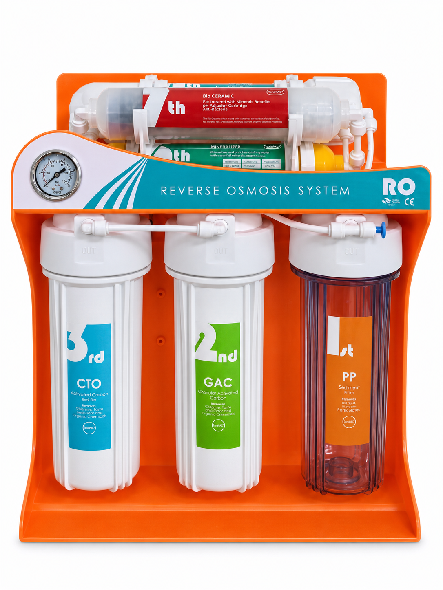

Orange-Bracket RO Water Purifier — Single Gauge
Orange-bracket RO purifier with one pressure gauge and three vertical filter housings.
Configuration reference: CR-01. Use this reference when asking for the pictured layout. It is not a manufacturer model or SKU.
Compare the orange bracket layout
Review the illustrated front gauge and housing arrangement when specifying the appearance and mounting layout for a private-label project.
A different bracket color does not establish a different membrane output or filtration sequence.
Configuration and quotation checklist
| Configuration reference | CR-01 — website photo reference, not a manufacturer SKU |
|---|---|
| Pictured layout | Orange-bracket RO purifier with one pressure gauge and three vertical filter housings. |
| Photo identification | Orange-bracket RO purifier with one pressure gauge and three vertical filter housings. Some rear components are partly obscured; an exact filtration-stage count is not assigned from this front view. |
| Supplier model / SKU | Confirm against the selected supplier configuration sheet. |
| Filtration stages and media | Confirm the ordered 5-, 6- or 7-stage sequence and cartridge media; the photograph does not certify the supplied stages. |
| Membrane capacity and operating limits | Confirm the selected membrane, feed-water analysis, inlet conditions and rated output basis. |
| Dimensions and connections | Request a dimensioned drawing, fitting sizes, mounting points and service clearances. |
| Included parts and options | Confirm the exact supplied parts, pump, tank, faucet and accessories in the quotation. |
The white-background image is digitally edited. Confirm supplied components and any label claims against original model documentation.
Configuration questions
What identifies this pictured configuration?
Orange-bracket RO purifier with one pressure gauge and three vertical filter housings. A different bracket color does not establish a different membrane output or filtration sequence.
What should be confirmed before ordering this configuration?
Confirm the supplier model, filtration sequence, membrane output basis, installation drawing and included components in the quotation.
Can the linked cartridges be used without checking compatibility?
No. Confirm cartridge dimensions, fittings, membrane housing and operating conditions for the selected system before choosing replacement parts.
Compare related RO components
- Filter cartridge combinations
- RO membrane elements
- T33 post-carbon filters
- Mineralizing inline filters
- Maifan stone inline filters
Component links are for configuration review. They do not establish cartridge interchangeability or suitability without size, connector and operating-condition checks.